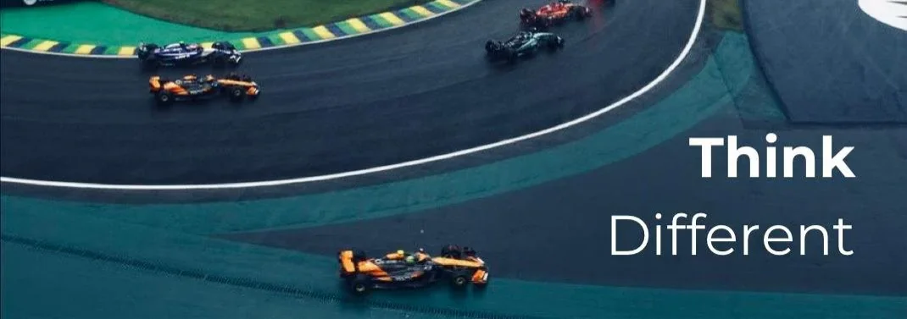
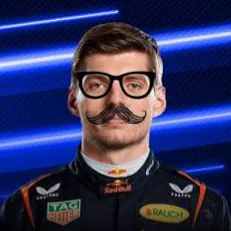

race day soonFranz sits in your Fluxer chat and knows Formula 1. You ask a question, he replies with the answer — standings, results, or who's in which car. He also quietly counts down to the next race in his status — rotating between the countdown, the next session, the championship leader and the last race winner — so you always know when lights out is.
All the race info comes from OpenF1 — the free live timing feed for Formula 1. Franz doesn't keep any of it himself; he just asks OpenF1 for you.
Want a heads-up before lights out? Run >follow in the channel and Franz will remind you 30 minutes before every race and sprint. Stuck, or curious about his other bots? the support server has both.
Everything starts with >:
| >ds | who's leading the championship |
| >last | how the last race finished |
| >next | next session — where, which circuit, country, countdown |
| >who 3 | who's car #3? name, team, country |
| >ping | live latency to fluxer + openf1, cpu/memory + uptime checkup |
| >follow | remind this channel 30 minutes before race/sprint |
| >unfollow | stop the reminders for this server |
| >help | remind me what you can do |
>follow once and Franz pings the channel before every race and sprint.